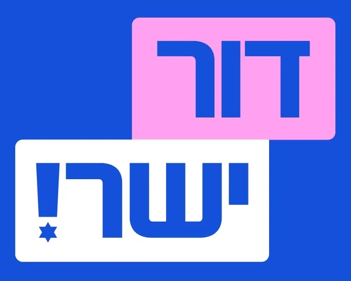

Head of Youth HQ, Yashar!ראש מטה הצעירים, ישר!Глава молодёжного штаба «Яшар!»
Chair, Dor Yashar!יו"ר דור ישר!Председатель «Дор Яшар!»
Tech & Marketingהייטק ושיווקТехнологии и маркетинг
ModelדוגמניתМодель
As featured inהופיעה ב־О ней писали
Ynet✦
Yedioth Ahronoth✦
Channel 12 News✦
Israel Hayom✦
Maariv✦
Walla!✦
The Jerusalem Post✦
JNS✦
Davar✦
Fashion Gone Rogue✦
Ynet✦
Yedioth Ahronoth✦
Channel 12 News✦
Israel Hayom✦
Maariv✦
Walla!✦
The Jerusalem Post✦
JNS✦
Davar✦
Fashion Gone Rogue✦
“
Eliana is the Israel of today — determined, principled, and the right blend of action and spirit.אליענה היא ישראל של היום — נחושה, ערכית וחיבור נכון של עשייה ורוח.Элиана — это сегодняшний Израиль: решительная, принципиальная, верное сочетание дела и духа.
Gadi Eisenkotגדי איזנקוטГади Айзенкот ·
Former IDF Chief of Staff, Chairman of Yashar!הרמטכ"ל לשעבר, יו"ר ישר!Бывший начальник Генштаба ЦАХАЛ, председатель «Яшар!»
Eliana Sachs was born in June 2001 at Soroka Medical Center in Be'er Sheva, the daughter of parents who made aliyah from the former Soviet Union. As a teenager, encouraged by her mother, she stepped in front of the camera for the first time — the beginning of a modeling career that would put her in campaigns for some of Israel's leading fashion brands.
At eighteen she moved to Tel Aviv to do her national service at the State Attorney's Office, working as a paralegal while holding down two jobs and building her career in fashion. From there she went on to advertising at McCann, digital marketing at Isrotel, and business development at Natural Intelligence, an AI-driven tech company.
On the morning of June 24, 2025 — just hours before the ceasefire that ended the twelve-day war with Iran — a ballistic missile struck the family's building in Be'er Sheva. Eliana's mother, Michal, and her younger brother, Eitan, a soldier, were killed, together with Eitan's girlfriend, Noa Boguslavsky, and their neighbor, Naomi Shaanan. Her father, Igor, was injured and survived.
"After losing my mother and brother, I understood that we don't have the privilege of standing on the sidelines."
What Eliana did next is the heart of her story. She wrote two lists: twenty wishes to fulfil in her family's memory, and twenty traits — ten from her mother, ten from her brother — to carry forward into a new version of herself. Four months later she was the face of the Factory 54 campaign, the store her mother loved most. Days after that, she walked the runway at Tel Aviv Fashion Week in the jumpsuit Eitan had been fitted for — the last design he ever modeled.
In February 2026, a missile struck again, this time beside her own apartment in Tel Aviv. With the door jammed by the blast, she escaped through a window — and minutes later was running a frightened new immigrant, two days in the country, to a shelter. Her answer was the same as before: "A victim is someone who makes themselves a victim. You can choose to get up and keep moving forward."
In July 2026, Gadi Eisenkot asked her to lead the Youth Headquarters of Yashar!. She has since become one of the most recognisable young voices in Israeli public life: building a national community of young leaders, standing for bereaved siblings and orphans, and speaking openly about mental resilience — proof, in her words, "that the little girl from Be'er Sheva can do something good."
אליענה זקס נולדה ביוני 2001 בבית החולים סורוקה בבאר שבע, לזוג הורים שעלו לישראל מברית המועצות לשעבר. בגיל ההתבגרות, בעידודה של אמה, עמדה לראשונה מול המצלמה — תחילתה של קריירת דוגמנות שהובילה אותה לקמפיינים של מותגי האופנה המובילים בישראל.
בגיל 18 עברה לתל אביב לשירות לאומי בפרקליטות המדינה, שם עבדה כפרליגלית — ובמקביל החזיקה שתי עבודות ובנתה את הקריירה שלה באופנה. משם המשיכה לעולם הפרסום במקאן, לשיווק דיגיטלי ברשת ישרוטל ולפיתוח עסקי בחברת ההייטק Natural Intelligence.
בבוקר ה־24 ביוני 2025 — שעות ספורות לפני הפסקת האש שסיימה את מבצע "עם כלביא" — פגע טיל בליסטי איראני בבניין המשפחה בבאר שבע. אמה של אליענה, מיכל, ואחיה הצעיר, איתן, חייל, נהרגו יחד עם בת זוגו של איתן, נועה בוגוסלבסקי, ושכנתם נעמי שאנן. אביה, איגור, נפצע ושרד.
"אחרי שאיבדתי את אמי ואחי, הבנתי שאין לנו את הפריבילגיה לעמוד מהצד."
מה שאליענה עשתה אחר כך הוא לב הסיפור. היא כתבה שתי רשימות: עשרים משאלות להגשים לזכר משפחתה, ועשרים תכונות — עשר מאמה ועשר מאחיה — לקחת איתה אל "אליענה החדשה". ארבעה חודשים לאחר מכן כבר הייתה פני הקמפיין של פקטורי 54, החנות שאמה כל כך אהבה. ימים אחר כך צעדה על המסלול בשבוע האופנה בתל אביב, בסרבל שנתפר למידותיו של איתן — הדגם האחרון שהוא לבש.
בפברואר 2026 פגע טיל שוב — הפעם ליד דירתה שלה בתל אביב. כשהדלת נחסמה מעוצמת הפיצוץ, היא נמלטה דרך החלון — ודקות אחר כך כבר רצה למקלט יחד עם עולה חדשה ומבוהלת, שהייתה בארץ יומיים בלבד. התשובה שלה הייתה זהה: "קורבן הוא מי שעושה מעצמו קורבן. אפשר לבחור לקום ולהמשיך קדימה."
ביולי 2026 ביקש ממנה גדי איזנקוט לעמוד בראש מטה הצעירים של ישר!. מאז היא הפכה לאחד הקולות הצעירים הבולטים בשיח הציבורי בישראל: בונה קהילת מנהיגות צעירה ארצית, עומדת לצד אחים ואחיות שכולים ויתומים, ומדברת בגלוי על חוסן נפשי — הוכחה, כדבריה, "שהילדה הקטנה מבאר שבע יכולה לעשות משהו טוב."
Элиана Закс родилась в июне 2001 года в медицинском центре «Сорока» в Беэр-Шеве, в семье репатриантов из бывшего Советского Союза. Подростком, по совету мамы, она впервые встала перед камерой — так началась карьера модели, которая привела её в кампании ведущих израильских модных брендов.
В восемнадцать лет она переехала в Тель-Авив, чтобы проходить гражданскую службу помощником юриста в Государственной прокуратуре, — параллельно работая на двух работах и строя карьеру в моде. Затем были реклама в McCann, digital-маркетинг в Isrotel и развитие бизнеса в технологической компании Natural Intelligence, работающей на основе ИИ.
Утром 24 июня 2025 года — всего за несколько часов до прекращения огня, завершившего двенадцатидневную войну с Ираном, — баллистическая ракета попала в дом семьи в Беэр-Шеве. Погибли мама Элианы, Михаль, и её младший брат Эйтан, солдат, а вместе с ними девушка Эйтана Ноа Богуславски и их соседка Наоми Шаанан. Отец, Игорь, был ранен и выжил.
«После того как я потеряла маму и брата, я поняла, что у нас нет привилегии стоять в стороне».
То, что Элиана сделала потом, — сердце её истории. Она составила два списка: двадцать желаний, которые исполнит в память о семье, и двадцать качеств — десять от мамы и десять от брата, — которые возьмёт с собой в новую себя. Через четыре месяца она стала лицом кампании Factory 54 — магазина, который так любила её мама. А несколько дней спустя вышла на подиум Недели моды в Тель-Авиве в комбинезоне, сшитом по меркам Эйтана, — последней модели, которую он показывал.
В феврале 2026 года ракета ударила снова — на этот раз рядом с её собственной квартирой в Тель-Авиве. Взрывом заклинило дверь, и она выбралась через окно, а уже через несколько минут вела в убежище испуганную репатриантку, которая была в стране всего два дня. Её ответ был прежним: «Жертва — это тот, кто сам делает себя жертвой. Можно выбрать — подняться и идти дальше».
В июле 2026 года Гади Айзенкот предложил ей возглавить молодёжный штаб «Яшар!». С тех пор она стала одним из самых узнаваемых молодых голосов в общественной жизни Израиля: создаёт общенациональное сообщество молодых лидеров, поддерживает осиротевших братьев, сестёр и сирот и открыто говорит о психологической устойчивости — доказательство, по её словам, «что маленькая девочка из Беэр-Шевы может сделать что-то хорошее».
In loving memoryלזכרםСветлая память
"As long as we remember them, they live.""כל עוד זוכרים אותם — הם חיים."«Пока мы их помним — они живы».
Michal Sachsמיכל זקס ז"לМихаль Закс
Mother · 50אמא · בת 50Мама · 50 лет
A business owner, a cancer survivor, and a volunteer who spent her free time packing food parcels for soldiers. The one who first believed Eliana belonged in front of the camera.בעלת עסק, מחלימה מסרטן ומתנדבת שהקדישה את זמנה הפנוי לאריזת חבילות מזון לחיילים. זו שהאמינה ראשונה שמקומה של אליענה מול המצלמה.Владелица своего бизнеса, победившая рак, волонтёр, которая в свободное время собирала продуктовые посылки для солдат. Именно она первой поверила, что Элиане место перед камерой.
A soldier in training with the IDF's Multidimensional Unit and a familiar face on the runways of Shenkar's fashion department. Eliana hopes young people his age will learn from him a love of this country — despite everything.חייל במסלול היחידה הרב־ממדית ופנים מוכרות על מסלולי התצוגה של המחלקה לעיצוב אופנה בשנקר. אליענה מקווה שבני גילו ילמדו ממנו אהבת הארץ — למרות הכול.Солдат, проходивший подготовку в Многопрофильном подразделении ЦАХАЛ, и знакомое лицо на показах факультета дизайна моды Шенкар. Элиана надеется, что его сверстники научатся у него любви к этой стране — несмотря ни на что.
Also remembered: Noa Boguslavsky, 18, and Naomi Shaanan, 73, killed in the same strike.נזכור גם את נועה בוגוסלבסקי ז"ל, בת 18, ואת נעמי שאנן ז"ל, בת 73, שנהרגו באותה פגיעה.Мы также помним Ноа Богуславски, 18 лет, и Наоми Шаанан, 73 года, погибших при том же ударе.
5
worlds she moves between: politics, technology, advertising, fashion and public serviceעולמות שהיא נעה ביניהם: פוליטיקה, הייטק, פרסום, אופנה ושירות ציבוריсфер, в которых она работает: политика, технологии, реклама, мода и госслужба
No. 38
on the Yashar! Knesset list in the 2026 general electionברשימת ישר! לכנסת בבחירות 2026в списке «Яшар!» на выборах в Кнессет 2026 года
1st
party youth platform of the 2026 election, launched by the HQ she leadsתוכנית צעירים ייעודית בבחירות 2026 — של המטה שבראשו היא עומדתмолодёжная программа партии на выборах 2026 года — от штаба, который она возглавляет
The JourneyהמסעПуть
Milestonesציוני דרךВехи
2001
Born in Be'er Shevaנולדה בבאר שבעРодилась в Беэр-Шеве
The daughter of Michal and Igor, immigrants from the former Soviet Union, and big sister to Eitan.בתם של מיכל ואיגור, עולים מברית המועצות לשעבר, ואחות גדולה לאיתן.Дочь Михаль и Игоря, репатриантов из бывшего СССР, и старшая сестра Эйтана.
High schoolהתיכוןШкола
A first campaignקמפיין ראשוןПервая кампания
Begins modeling at her mother's encouragement.מתחילה לדגמן בעידודה של אמה.По совету мамы начинает работать моделью.
2019
Tel Aviv & public serviceתל אביב ושירות ציבוריТель-Авив и служение обществу
Moves to Tel Aviv for national service as a paralegal at the State Attorney's Office — where her belief in justice and public service takes shape.עוברת לתל אביב לשירות לאומי כפרליגלית בפרקליטות המדינה — שם מתגבשת אמונתה בצדק ובשירות הציבור.Переезжает в Тель-Авив на гражданскую службу помощником юриста в Государственной прокуратуре — там складывается её вера в справедливость и служение обществу.
CareerקריירהКарьера
Advertising, marketing & techפרסום, שיווק והייטקРеклама, маркетинг и технологии
McCann advertising agency, the Isrotel hotel chain, and Natural Intelligence — moving from marketing into business development and international partnerships.משרד הפרסום מקאן, רשת ישרוטל ו־Natural Intelligence — מהשיווק אל הפיתוח העסקי והשותפויות הבינלאומיות.Рекламное агентство McCann, сеть отелей Isrotel и Natural Intelligence — от маркетинга к развитию бизнеса и международным партнёрствам.
June 24, 202524 ביוני 202524 июня 2025
The day everything changedהיום שבו הכול השתנהДень, когда всё изменилось
An Iranian missile hits the family home in Be'er Sheva. Her mother Michal and brother Eitan are killed.טיל איראני פוגע בבית המשפחה בבאר שבע. אמה מיכל ואחיה איתן נהרגים.Иранская ракета попадает в дом семьи в Беэр-Шеве. Погибают её мама Михаль и брат Эйтан.
Oct 2025אוקטובר 2025Октябрь 2025
Coming full circleסגירת מעגלКруг замыкается
Fronts the Factory 54 Fall–Winter campaign, and walks Tel Aviv Fashion Week for Shenkar in her brother's last design — a tribute covered nationwide.מככבת בקמפיין סתיו־חורף של פקטורי 54, וצועדת בשבוע האופנה בתל אביב בתצוגת שנקר בדגם האחרון של אחיה — מחווה שסוקרה בכל הארץ.Становится лицом осенне-зимней кампании Factory 54 и выходит на подиум Недели моды в Тель-Авиве в показе Шенкар в последней модели брата — дань памяти, о которой узнала вся страна.
Feb 2026פברואר 2026Февраль 2026
Struck twice — and still standingנפגעה פעמיים — ועדיין עומדתУдар дважды — и она по-прежнему стоит
A missile hits beside her Tel Aviv home. She shares her story on Channel 12's morning news: "You can choose to get up and keep moving forward."טיל פוגע ליד ביתה בתל אביב. היא משתפת את סיפורה בחדשות הבוקר של חדשות 12: "אפשר לבחור לקום ולהמשיך קדימה."Ракета падает рядом с её домом в Тель-Авиве. Она рассказывает свою историю в утренних новостях 12-го канала: «Можно выбрать — подняться и идти дальше».
July 2026יולי 2026Июль 2026
Head of the Youth Headquarters, Yashar!ראש מטה הצעירים, ישר!Глава молодёжного штаба «Яшар!»
Joins Gadi Eisenkot's party to lead its youth campaign nationwide, and founds Dor Yashar!, its young-generation movement — on mental resilience, civic engagement, and bringing young Israelis into the rooms where decisions are made.מצטרפת למפלגתו של גדי איזנקוט, מובילה את מטה הצעירים הארצי ומקימה את דור ישר!, תנועת הדור הצעיר — חוסן נפשי, מעורבות אזרחית וחיבור צעירים למוקדי קבלת ההחלטות.Присоединяется к партии Гади Айзенкота, возглавляет её молодёжную кампанию по всей стране и основывает «Дор Яшар!», движение молодого поколения, — психологическая устойчивость, гражданская активность и место для молодых израильтян там, где принимаются решения.
A platform for a generationתוכנית לדור שלםПрограмма для поколения
Launches the first dedicated youth platform of the election, and runs as No. 38 on the Yashar! list for the 26th Knesset.משיקה את תוכנית הצעירים הייעודית הראשונה בבחירות, ומתמודדת במקום ה־38 ברשימת ישר! לכנסת.Представляет первую на этих выборах отдельную программу для молодёжи и идёт под № 38 в списке «Яшар!» в Кнессет 26-го созыва.
NextהלאהДальше
Representing Israel's next generationלייצג את הדור הבא של ישראלГолос следующего поколения Израиля
On stages in Israel and abroad: telling Israel's story through her own, and leading teams that turn challenge into opportunity.על במות בישראל ובעולם: לספר את הסיפור של ישראל דרך הסיפור שלה, ולהוביל צוותים שהופכים אתגר להזדמנות.На сценах в Израиле и за рубежом: рассказывать историю Израиля через свою собственную и вести за собой команды.
Work & Leadershipעשייה ומנהיגותДеятельность и лидерство
Five worlds. One purpose.חמישה עולמות. מטרה אחת.Пять сфер. Одна цель.
Eliana brings together rare experience: the discipline of public service, the commercial edge of tech and advertising, and the presence of a life lived in front of the camera.אליענה מביאה שילוב נדיר: המשמעת של השירות הציבורי, החדות העסקית של ההייטק והפרסום, והנוכחות של מי שחיה מול המצלמה.Элиана сочетает редкий опыт: дисциплину государственной службы, деловую хватку технологий и рекламы и уверенность человека, чья жизнь проходит перед камерой.
01
Public Leadershipמנהיגות ציבוריתОбщественное лидерство
Since July 2026, Eliana has led the youth arm of the party headed by former IDF Chief of Staff Gadi Eisenkot — recruiting and organising young Israelis across the country and giving a generation that served, fought and grieved a seat at the table.מיולי 2026 אליענה עומדת בראש זרוע הצעירים של המפלגה בראשות הרמטכ"ל לשעבר גדי איזנקוט — מגייסת ומארגנת צעירים בכל רחבי הארץ, ומעניקה לדור ששירת, נלחם והתאבל מקום ליד השולחן.С июля 2026 года Элиана руководит молодёжным крылом партии бывшего начальника Генштаба Гади Айзенкота: привлекает и объединяет молодых израильтян по всей стране и даёт поколению, которое служило, воевало и горевало, место за столом.
Founder & Chair of Dor Yashar!, the party's young-generation movementמייסדת ויו"ר דור ישר!, תנועת הדור הצעיר של המפלגהОсновательница и председатель «Дор Яшар!», движения молодого поколения партии
Advocate for bereaved siblings, orphans and victims of terrorפעילה למען אחים ואחיות שכולים, יתומים ונפגעי פעולות איבהПоддерживает осиротевших братьев и сестёр, сирот и пострадавших от терактов
Represented bereaved siblings at Ynet's national conference on post-traumaייצגה את האחים השכולים בכנס הלאומי לפוסט־טראומה של ynetПредставляла осиротевших братьев и сестёр на национальной конференции Ynet о посттравме
Candidate No. 38 on the Yashar! list, 2026 electionמקום 38 ברשימת ישר!, בחירות 2026Кандидат № 38 в списке «Яшар!», выборы 2026 года
Founded by Eliana · Dor Yashar!הקימה אליענה · דור ישר!Основала Элиана · «Дор Яшар!»

The young-generation movement of Yashar!, which Eliana founded and chairs. Its idea is simple: take responsibility, decide for yourself — and stop reacting to reality; start shaping it. Open to young Israelis in every city and town.תנועת הדור הצעיר של ישר!, שאליענה הקימה ועומדת בראשה. הרעיון פשוט: לקחת אחריות, להחליט בעצמנו — להפסיק להגיב למציאות ולהתחיל לעצב אותה. פתוחה לצעירים וצעירות בכל עיר ויישוב.Движение молодого поколения «Яшар!», которое Элиана основала и возглавляет. Идея проста: брать на себя ответственность, решать самим — и перестать реагировать на реальность, начать её создавать. Открыто для молодёжи в каждом городе и посёлке.
The Youth Platform she championedתוכנית הצעירים שהובילהМолодёжная программа, которую она продвигала
The first dedicated plan for young adults published by any party in the 2026 race — on cost of living, housing, military service and the path to financial independence.התוכנית הייעודית הראשונה לצעירים שפרסמה מפלגה כלשהי בבחירות 2026 — יוקר המחיה, דיור, שירות צבאי והדרך לעצמאות כלכלית.Первый отдельный план для молодёжи, опубликованный партией в кампании 2026 года, — о стоимости жизни, жилье, армейской службе и пути к финансовой независимости.
+15% pay for conscripts+15% לשכר החיילים בסדיר+15% к зарплате срочников+50% for 3rd-year combat soldiers+50% ללוחמים בשנה השלישית+50% бойцам на третьем году службыRenter protectionהגנה על שוכריםЗащита арендаторовPaid internshipsהתמחויות בתשלוםОплачиваемые стажировкиFinancial literacyאוריינות פיננסיתФинансовая грамотностьMinisterial youth committeeועדת שרים לענייני צעיריםМинистерский комитет по делам молодёжи
02
Technology & Businessהייטק ופיתוח עסקיТехнологии и бизнес
Natural Intelligence
At Natural Intelligence, a global leader in AI-powered comparison platforms, Eliana rose from marketing to business development manager — building partnerships and growth across international markets.ב־Natural Intelligence, חברה מובילה בעולם בפלטפורמות השוואה מבוססות בינה מלאכותית, אליענה התקדמה מהשיווק לתפקיד מנהלת פיתוח עסקי — בניית שותפויות וצמיחה בשווקים בינלאומיים.В Natural Intelligence, мировом лидере платформ сравнения на основе ИИ, Элиана выросла от маркетолога до менеджера по развитию бизнеса — партнёрства и рост на международных рынках.
Business development & international partnershipsפיתוח עסקי ושותפויות בינלאומיותРазвитие бизнеса и международные партнёрства
Performance and growth marketingשיווק ביצועים וצמיחהPerformance- и growth-маркетинг
03
Advertising & Marketingפרסום ושיווקРеклама и маркетинг
McCann · Isrotel
Her marketing career took her through McCann, one of the world's great advertising networks, and the digital team of Isrotel, Israel's leading hotel group — across digital, media and brand.הקריירה השיווקית שלה עברה במקאן, מרשתות הפרסום הגדולות בעולם, ובצוות הדיגיטל של ישרוטל, רשת המלונות המובילה בישראל — דיגיטל, מדיה ומיתוג.Её маркетинговая карьера прошла через McCann, одну из крупнейших рекламных сетей мира, и digital-команду Isrotel, ведущей гостиничной сети Израиля, — digital, медиа и бренд.
Digital, media & brand strategyדיגיטל, מדיה ואסטרטגיית מותגDigital, медиа и бренд-стратегия
Storytelling that moves audiencesסטוריטלינג שמניע קהליםСторителлинг, который трогает аудиторию
04
FashionאופנהМода
Model · Inch Model Agencyדוגמנית · סוכנות הדוגמנות InchМодель · модельное агентство Inch
A model since her teens, Eliana has fronted campaigns for leading Israeli brands, and in 2025 turned the runway into a place of remembrance.דוגמנית מגיל ההתבגרות, אליענה הובילה קמפיינים של מותגים ישראליים מובילים, וב־2025 הפכה את המסלול למקום של זיכרון.Модель с подросткового возраста, Элиана снималась в кампаниях ведущих израильских брендов, а в 2025 году превратила подиум в место памяти.
State Attorney's Office · Tel Avivפרקליטות המדינה · תל אביבГосударственная прокуратура · Тель-Авив
Her national service as a paralegal at the State Attorney's Office gave her a lasting belief in the rule of law — and a first-hand view of how the state treats the people it serves.השירות הלאומי כפרליגלית בפרקליטות המדינה הקנה לה אמונה עמוקה בשלטון החוק — והיכרות מקרוב עם האופן שבו המדינה מתייחסת לאנשים שהיא משרתת.Гражданская служба помощником юриста в Государственной прокуратуре дала ей прочную веру в верховенство закона — и возможность увидеть вблизи, как государство относится к людям, которым служит.
"I really want to bring justice to people — I believe in the law.""אני מאוד רוצה להשיג צדק לאנשים ואני מאמינה בחוקים."«Я очень хочу добиваться справедливости для людей — я верю в закон».
SpeakingהרצאותЛекции
A story that moves rooms to action.סיפור שמניע אולמות לפעולה.История, которая побуждает к действию.
Eliana speaks with rare honesty about loss, resilience and choosing purpose — and about the generation that will shape Israel's future. Her talks leave audiences with something to act on, not just something to feel.אליענה מדברת בכנות נדירה על אובדן, חוסן ובחירה במשמעות — ועל הדור שיעצב את עתידה של ישראל. ההרצאות שלה משאירות את הקהל עם משהו לעשות, לא רק עם משהו להרגיש.Элиана с редкой откровенностью говорит об утрате, стойкости и выборе смысла — и о поколении, которое определит будущее Израиля. После её выступлений у слушателей остаётся не только чувство, но и желание действовать.
I
Choosing to Riseלבחור לקוםВыбрать подняться
Keynote · All audiencesהרצאה מרכזית · לכל קהלКлючевая лекция · Для любой аудитории
Her signature talk. How do you go on when half your family is gone in a moment? Twenty wishes, twenty traits, and the daily decision to turn life's hardest challenges into opportunity — and pain into purpose.ההרצאה המזוהה איתה. איך ממשיכים כשחצי מהמשפחה נעלמת ברגע? עשרים משאלות, עשרים תכונות, וההחלטה היומיומית להפוך את האתגרים הקשים ביותר להזדמנות — ואת הכאב למשמעות.Её главная лекция. Как жить дальше, когда половина семьи исчезает в одно мгновение? Двадцать желаний, двадцать качеств и ежедневное решение превращать боль в смысл.
II
Israel, Through My Eyesישראל, דרך העיניים שליИзраиль моими глазами
Communities, campuses & delegations abroadקהילות, קמפוסים ומשלחות בעולםОбщины, кампусы и делегации за рубежом
A first-hand account of life under fire — of loss, of a country that keeps getting up, and of the young Israelis who refuse to leave. A human voice for Israel on the world stage.עדות אישית מהחיים תחת אש — על אובדן, על מדינה שממשיכה לקום, ועל הצעירים הישראלים שמסרבים לעזוב. קול אנושי לישראל על הבמה העולמית.Рассказ из первых уст о жизни под обстрелами — об утрате, о стране, которая снова и снова поднимается, и о молодых израильтянах, которые отказываются уезжать. Человеческий голос Израиля на мировой сцене.
III
The Present, Not the Futureההווה, לא העתידНастоящее, а не будущее
Youth movements, schools & pre-army programsתנועות נוער, בתי ספר ומכינותМолодёжные движения, школы и подготовка к армии
"Our generation is not a promise for the future. We are here now." A call to young people to step into civic life, lead, and claim their place where decisions are made."הדור שלנו הוא לא הבטחה לעתיד. אנחנו כאן עכשיו." קריאה לצעירים להיכנס לחיים האזרחיים, להוביל ולתבוע את מקומם במוקדי ההחלטה.«Наше поколение — не обещание на будущее. Мы здесь и сейчас». Призыв к молодёжи включиться в общественную жизнь, вести за собой и занять своё место там, где принимаются решения.
IV
Resilience at Workחוסן בעבודהСтойкость на работе
Companies, leadership teams & HRחברות, צוותי הנהלה ומשאבי אנושКомпании, руководящие команды и HR
Drawing on her years in tech and advertising: leading and performing through crisis, mental resilience as a team skill, and how to "smile and live alongside the pain" without losing momentum.מתוך שנותיה בהייטק ובפרסום: להוביל ולתפקד בזמן משבר, חוסן נפשי כמיומנות צוותית, ואיך "לחייך ולחיות לצד הכאב" בלי לאבד תנופה.На основе её опыта в технологиях и рекламе: как руководить и работать в кризис, психологическая устойчивость как командный навык и как «улыбаться и жить рядом с болью», не теряя темпа.
Keynoteהרצאה מרכזיתКлючевая лекция
30–60 minutes, with Q&A30–60 דקות, כולל שאלות ותשובות30–60 минут, с вопросами из зала
Fireside chatשיחה פתוחהОткрытая беседа
An intimate, moderated conversationשיחה אינטימית בהנחיהКамерный разговор с модератором
PanelsפאנליםПанельные дискуссии
Conferences, summits & galasכנסים, פסגות ואירועי גאלהКонференции, саммиты и гала-вечера
WorkshopsסדנאותМастер-классы
For teams and young leadersלצוותים ולמנהיגים צעיריםДля команд и молодых лидеров
Available in Israel and internationally, in Hebrew and English.זמינה להרצאות בישראל ובעולם, בעברית ובאנגלית.Выступает в Израиле и за рубежом, на иврите и английском.
"Our generation is not a promise for the future. We are here now.""הדור שלנו הוא לא הבטחה לעתיד. אנחנו כאן עכשיו."«Наше поколение — не обещание на будущее. Мы здесь и сейчас».
"It's important to me to show people that you can smile and live alongside the pain.""חשוב לי להראות לאנשים שאפשר לחייך ולחיות לצד הכאב."«Для меня важно показать людям, что можно улыбаться и жить рядом с болью».
"I don't want to join those who leave. I want to live here — and make it good here.""אני לא רוצה להצטרף לחבר'ה שנוטשים את הארץ, רוצה לחיות פה ושיהיה כאן טוב."«Я не хочу быть среди тех, кто уезжает. Я хочу жить здесь — и чтобы здесь было хорошо».
"I want to feel that the tragedy I went through was not in vain.""רוצה להרגיש שהאסון שעברתי לא היה לחינם."«Я хочу чувствовать, что трагедия, которую я пережила, была не напрасной».
"I believe in the power of community, engagement and eye-level dialogue to create change.""אני מאמינה בכוח של קהילה, מעורבות ושיח בגובה העיניים כדי לייצר שינוי."«Я верю в силу сообщества, вовлечённости и разговора на равных, чтобы менять жизнь».
PortfolioפורטפוליוПортфолио
In frameבפרייםВ кадре
MediaתקשורתСМИ
In the pressבתקשורתВ прессе
Interviews, profiles and coverage from Israel's leading outlets.ראיונות, כתבות פרופיל וסיקור בכלי התקשורת המובילים בישראל.Интервью, портреты и публикации в ведущих СМИ Израиля.
Journalists and producers: for interviews, photos and a press kit, please use the contact form below and select "Media".עיתונאים ומפיקים: לראיונות, תמונות וערכת עיתונות, השתמשו בטופס למטה ובחרו "תקשורת".Журналистам и продюсерам: для интервью, фотографий и пресс-кита воспользуйтесь формой ниже и выберите «СМИ».
Contactצור קשרКонтакты
Let's create impact together.בואו ניצור השפעה יחד.Давайте действовать вместе.
For lectures, media and collaborations, write to Eliana directly or use the form.להרצאות, תקשורת ושיתופי פעולה — כתבו לאליענה ישירות או השתמשו בטופס.По вопросам лекций, СМИ и сотрудничества пишите Элиане напрямую или воспользуйтесь формой.